Görsel kitap · ilk sürüm · 11 Kasım 2026
Bir masa, bir kandil, dört çağ. Dil kayar, masa yerinde durur. Her yüzey kullanılmıştır ve sahnedeki tek ışık bir alevden gelir.
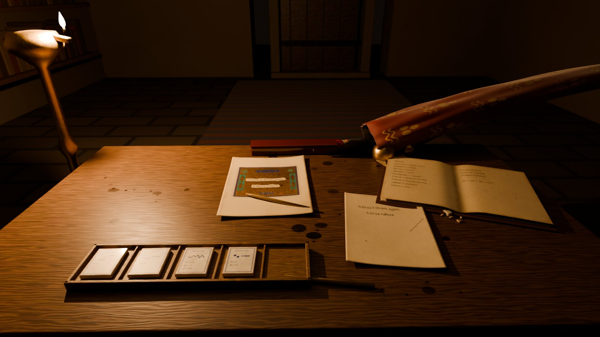
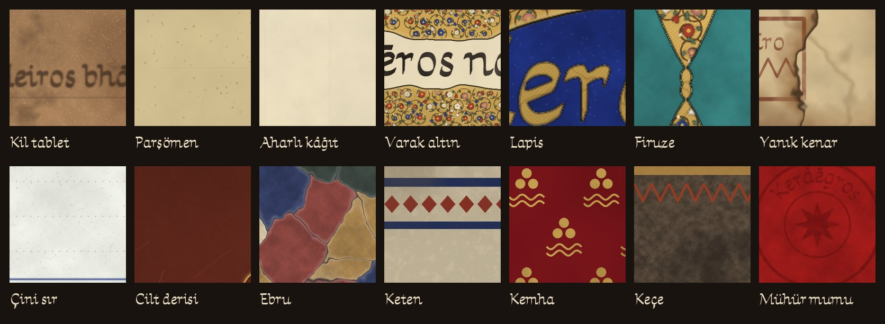
Her doku bir renk haritasıyla birlikte pürüzlülük, kabartma ve gerektiğinde saydamlık ile metallik haritası taşır. Böylece aynı sayfa hem masada hem okuma görünümünde ışığa aynı tepkiyi verir. Varak altın metal olarak işlenir ve kandili yansıtır; mürekkep kâğıttan biraz daha parlaktır, sır en parlak yüzeydir.
Yaşanmışlık kuralları: kâğıdın kenarları kararır, okuyucunun başparmağı hep aynı köşeyi kirletir, yeşil boya zamanla kâğıdı yer, kurt yolları alt kenarda toplanır. Masanın lekeleri çağdan çağa birikir; üçüncü çağda sol tarafta yanık izi kalır.
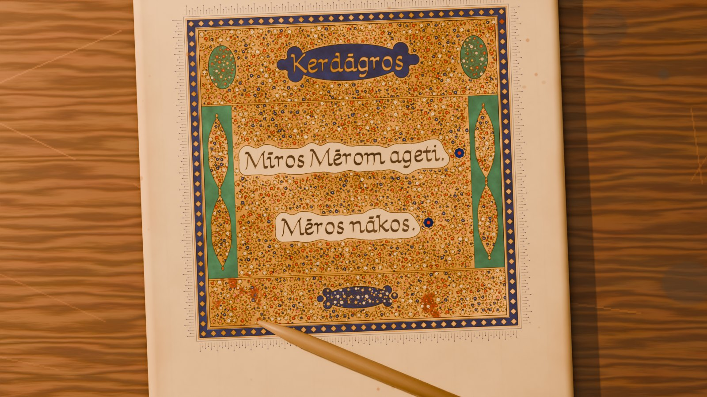
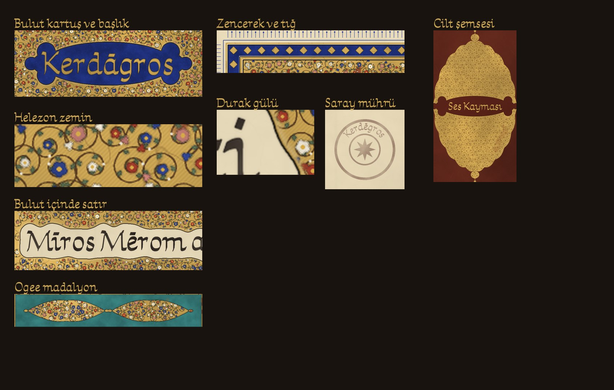
Burak'ın gönderdiği üç örnekten çıkan kurallar: kenar boşlukları geniş; altın zemin tek düz yüzey değil, küçük çiçekli sarmallarla dolu; her renkli alanın çevresinde koyu bir kontur var; lapis derin ve tanecikli. Sayfa dışına taşan mavi tığlar ve zencerek bordür sayfayı nesne gibi çerçeveler.
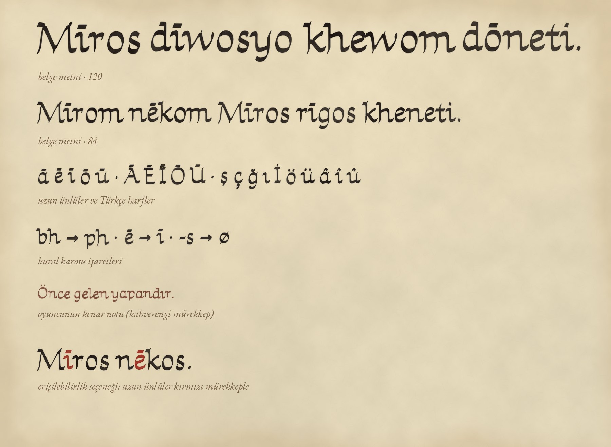
Hazır yazı tiplerinden hiçbiri hem Arap hattının ritmini hem makronlu ünlüleri taşımadı. Bu yüzden kendi yazı tipimizi ürettik. Aref Ruqaa'nın Latin harflerinin iskeleti çıkarıldı ve 70° tutulmuş bir kamış kalemle yeniden çizildi. Sonuçta yataylar kalın, dikeyler ince, noktalar eşkenar dörtgen; Nesih'teki gibi. Uzun ünlülerin çizgisi de yatay olduğu için kalın düşer ve uzaktan okunur.
assets/fonts/Katip-Regular.ttf, 136 glif, SIL OFL 1.1 (kaynak yazı tipinin lisansı geçerli).Kamera, kandil, kapı ve raf hiç değişmez. Değişen masadaki nesneler, belgenin malzemesi ve kimin geldiği.
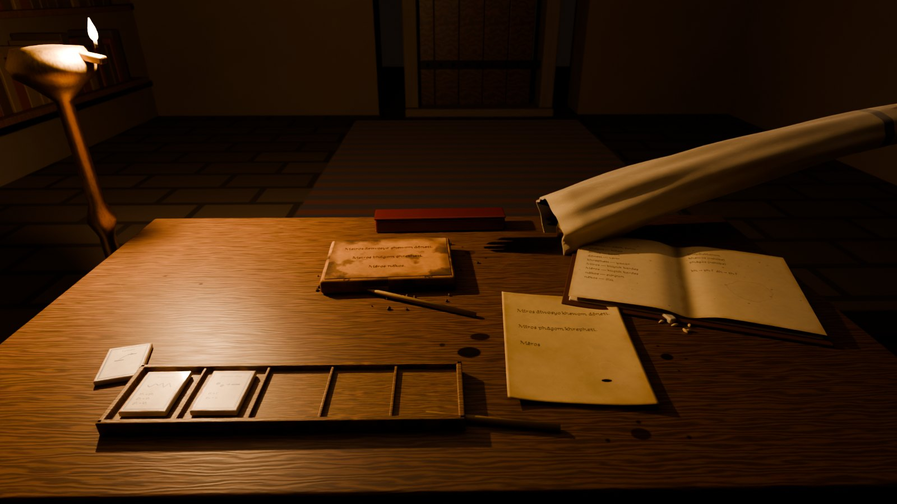
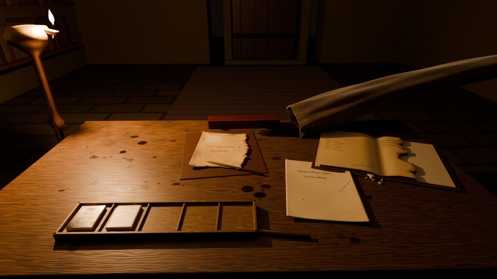
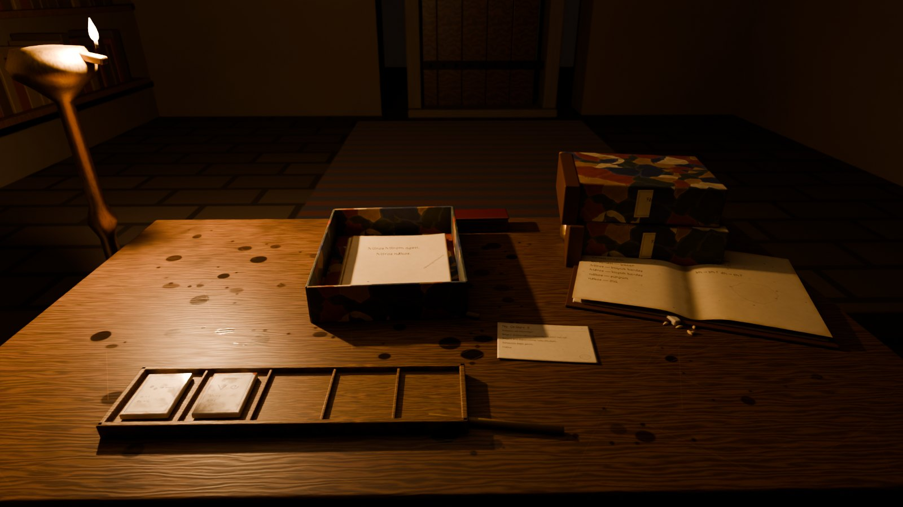
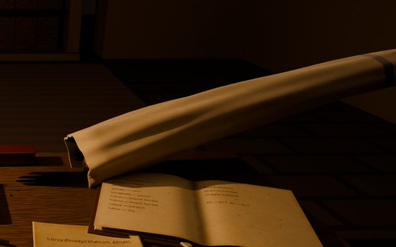
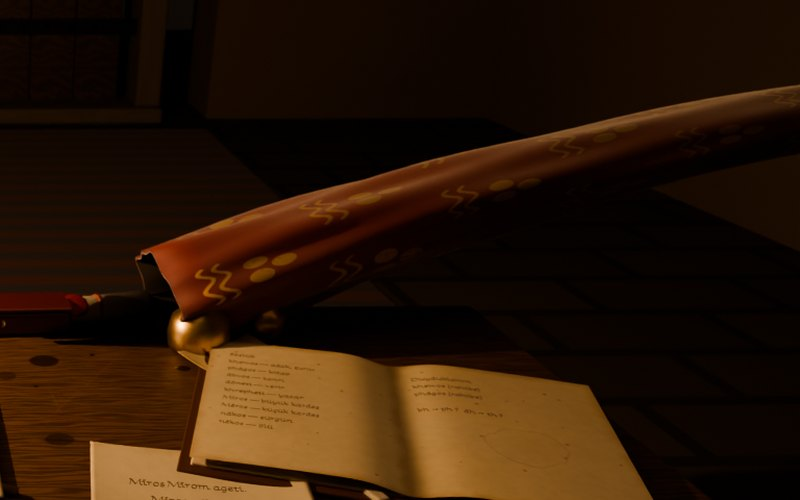
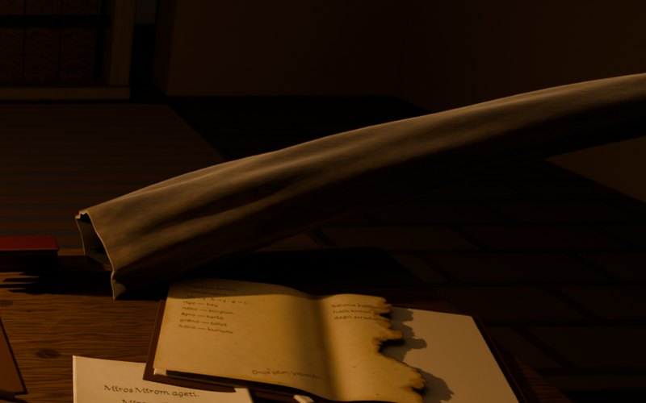
Kol kadrajın sağından girer, el uzun yenin içinde kalır. Masaya elin gölgesi düşer ama el görünmez. Bu bilinçli ve biraz tekinsiz: geçmişin insanları yalnızca izleriyle var. Kişi gidince masada nesnesi kalır: tablet, mühürlü rulo, deri dürüm.
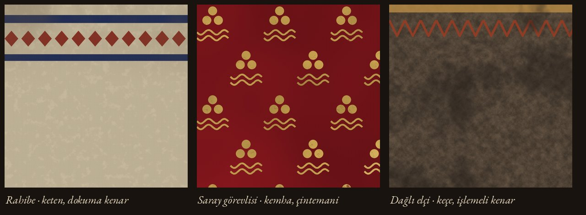
Figürleri biz çizmiyoruz. Telifsiz müze taramalarından kesip yeni sahneler kuruyoruz. Kolaj da çağdan çağa kopyalanır ve her kopyada biraz kayar: renk solar, bir figürün yeri değişir, bir ayrıntı kaybolur. Dil gibi resim de kayar.
| Adım | Kim | Ne |
|---|---|---|
| 1 | Burak | Aşağıdaki kaynaklardan yüksek çözünürlüklü taramaları indirir. Sayfada CC0 ya da Open Access yazdığını kontrol eder. |
| 2 | Burak | Photoshop'ta figürleri saydam PNG olarak keser: 6–10 figür, birkaç ağaç ve kaya. |
| 3 | Kod | Figürleri ortak palete eşler, sahneyi kurar, altın gökyüzünü ve çerçeveyi ekler. |
| 4 | Kod | Belgenin eskitmesini aynı geçişle uygular, böylece tarama ile kod ayırt edilmez. |
| 5 | Kod | Her çağ için kopyayı üretir: bir değişiklik, biraz daha solgunluk. |
Önerilen yerler: Belge 2'deki kurucular kaydına iki kardeş, Belge 4'teki dağ belgesine aynı sahnenin dağlıların anlattığı hali.
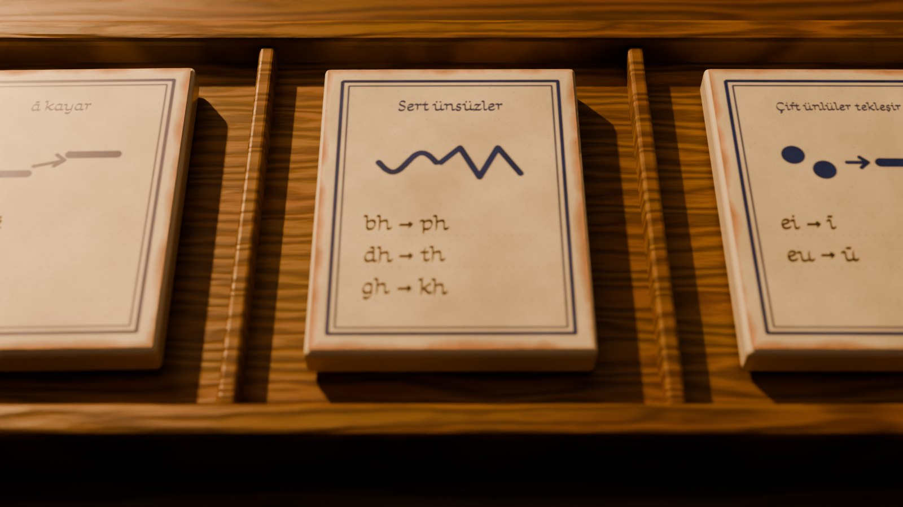
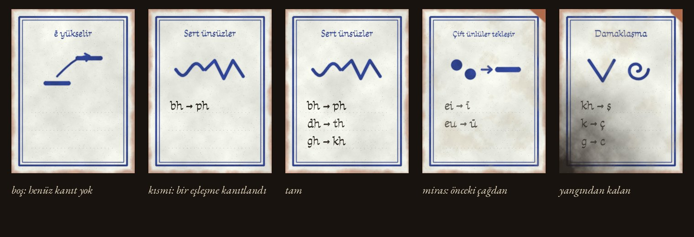
| Bileşen | Nesne | Davranış |
|---|---|---|
| Kural kartı | Çini karo | Kobalt piktogram ve ad sırın altında, değişmez. Kanıtlanan eşleşmeleri kâtip mürekkeple üstüne yazar; oyuncu kanıtladıkça satırlar belirir. |
| Kural sırası | Ahşap tepsi | Karo sürüklenince havaya kalkar, gölgesi uzar ve yumuşar. Yuvaya düşünce kısa bir tık sesi. |
| Sözlük | Defter | Sol sayfa sözlük, sağ sayfa "Duyduklarım". Çağ değişince yeni defter ya da ustadan kalan defter. |
| Kenar notu | Kopyanın kenarı | Oyuncunun notu sayfa kenarına çapraz yazılır, eski yazmalardaki hâşiye gibi. Kahverengi mürekkep. |
| Kopya | Kâğıt | Masa yazar: satır satır, kelime kelime. Gerçek kelime olmayan biçim kazınmış gibi silik kalır. |
| Soru | İstek pusulası | Seçenekler pusulada yazılı; cevap mühür basılarak verilir. |
| Yeni istek | Kapı | Kapı vurulur, aralıktaki ışık genişler, kol ucu girer. |
| Menü | Kapalı kitap | Ayraçlar: Başla, Devam, Ayarlar, Çık. Kitap açılınca oyun başlar. |
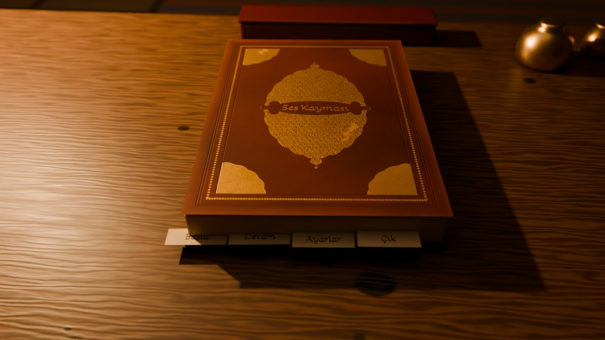
Önizleme tarayıcıda; oyunda aynısı Godot'ta ışık katmanıyla yapılır.
| Hareket | Değer |
|---|---|
| Kandil titremesi | Parlaklık %92–100, 0,5–3 Hz düzgün gürültü; alev 1–2 px kayar. |
| Toz | 40–60 zerre, yalnızca ışık konisinde, saniyede 4–8 px yukarı ve sağa. |
| Karo kaldırma | 120 ms; gölge ofseti 2 → 10 px, bulanıklık 2 → 8 px. Bırakınca 180 ms. |
| Kopya yazılışı | Satır satır açılır, kelime başına 250–400 ms. Mürekkep 1 sn içinde parlaktan mata döner. |
| Kapı | 1,2 sn'de aralanır; kol ucu 0,8 sn'de girer, 1 sn'de çekilir. |
| Çağ geçişi | Kandil söner (1,2 sn), nesneler tek tek solar ve yenileri belirir (2 sn), kandil yeniden yanar (1,5 sn). Yumuşak giriş-çıkış. |
| Hareket azaltma | Titreme ve toz kapanır, geçişler anlık olur. |
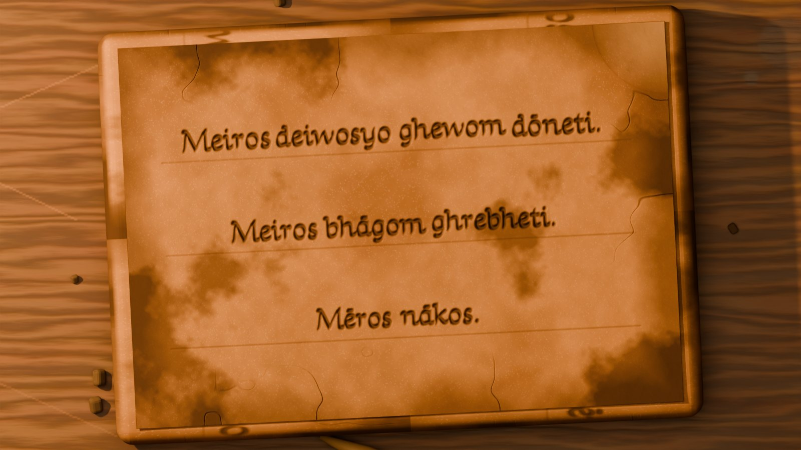
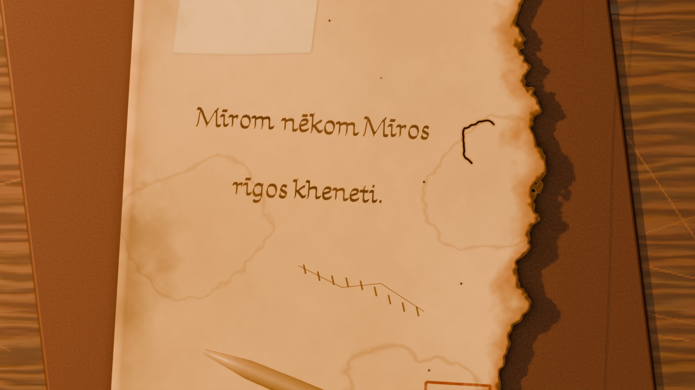
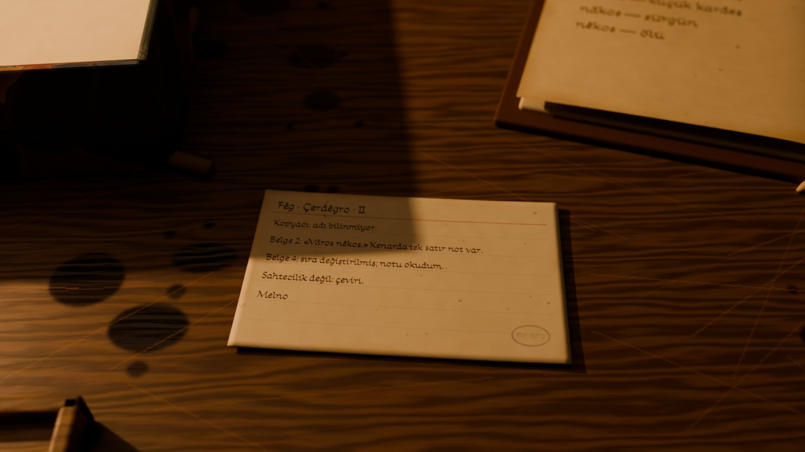
tools/art/desk_scene.py: Blender'ı Python modülü olarak çalıştırır, masayı, kandili, odayı ve çağ nesnelerini koddan kurar, Cycles ile render alır.tools/art/tex_*.py: belgeler, karolar, kapak, kumaşlar. Gerçek bulmaca metinleri data/ klasöründen.tools/art/katip_font.pyMinyatür taramaları (Burak) · plakaları sprite'lara ayırma · kandil titremesini ve karo sürüklemeyi Godot'ta kurma · dördüncü çağın belgeleri.
Kırmızı uzun ünlüler varsayılan mı olsun, seçenek mi? Saray mührü ipucu olarak kalsın mı? Görünmeyen elin gölgesi doğru tonu veriyor mu?